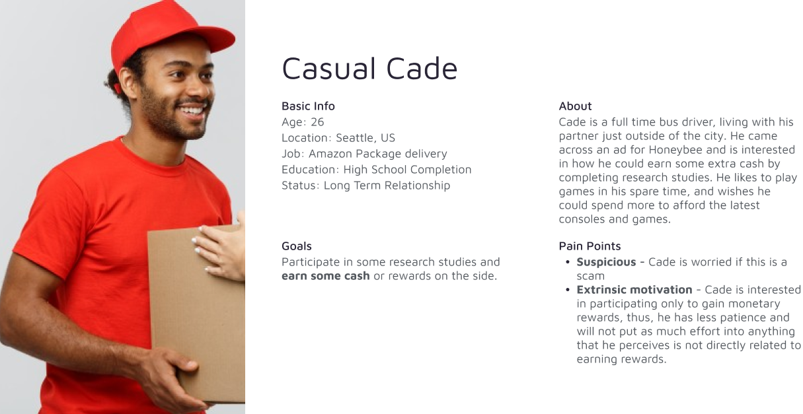

Role
UX Designer and Researcher

Honeybee Profile Builder

Role
UX Designer and Researcher
Project Type
Internship
Tools
Figma, GIMP
Timeline
2 weeks
“How has Social Distancing Affected Your Well Being?” Honeybee connects people to Research Studies to answer questions such as these. Researchers post their research studies to the Study Hive, and users browse these studies and participate! Honeybee aims to make research participation accessible and inclusive, and not just tied tightly within academia. As a psychology student, I could not resonate more with this mission.
During my Internship, I was Honeybee’s one and only Designer Bee. I was responsible for UX design and research and was tasked with designing new or current features to improve the usability, experience, and feasibility of our website and app. The Honeybee Profile Builder was likely the most challenging out of all the projects I tackled.
From a recent survey on user experience, we found that 30% of our users were unsatisfied with our website. We wanted to know why. So, we interviewed these users and examined their survey responses to find out.

And here we have our main issue.
According to the same survey, a majority of our users are motivated by the reward incentive. Taking this, and other demographic information from our user base, I drafted a persona.

Insights
Ideally, we’d be able to test this with our users, but due to limited resources we couldn’t. Instead, I tried to go through the flow myself as Cade.

This is a screenshot of our homepage and is exactly what Cade would encounter.
Insights
We needed to get Cade directly to the research studies that are relevant to him. But how to do that? I did some Competitive Benchmarking on other health, research, and content platforms to see how they gave personalized user results from the get-go.

Insights
I decided to go with a profile builder upon signup as it provides the following:
I divided the profile builder into 2 mini projects to tackle:

Honeybee is unique in that we not only need personal interest information, but also a lot of demographic information. If Cade is a 26 year old male living in the US, we do not want to show him research studies for elderly couples living in the UK.
I did some data analysis on the research studies we had and their intake criteria along with research studies from Sick Kids and other Academia Sources, taking note of each and every one.

Insights
Since the questions are multiple choice, I also needed to figure out all answer options for each question. A pretty daunting task was to make sure the answer options were inclusive to every individual. Every health condition, identity, etc. We want our users to feel seen and not have to choose “Other”.
To list out all possible health conditions would be overwhelming for the user to sift through and select. I wanted to reduce the possible options for health conditions, while still being inclusive of all the health conditions available.
I did extensive research looking at medical intake charts, personalized health care websites, surveys, and other resources for inclusivity to better understand the possible answers to include.

Insights
Before moving on to designs, my manager and I went over the question flow.

Insights

Insights
What would Cade’s mindset be, upon encountering this Profile Builder?

Considering this, I decided on the following conditions for the design of the profile builder:

We have 2 different question types. Some questions are straight forward whereas others require more thought. How do we make some questions go smoothly and quickly, and encourage more effort on others?

Questions that involve multiple selections require more thought compared to single select questions. How do we encourage our users to look at more options and consider them?

I pulled ideas from Spotify, Dribbble, and Youtube. Here, the behaviour is likely to look for something relevant and select it. This is the exact motivation that we want answering our multi-select questions.
Insights
The key was to encourage our users to spend more time looking at every option and selecting them, as opposed to beelining for the minimum needed and continuing on.

Key Design Decisions

Key Design Decisions
Not only did we want our profile builder to be objectively as short as possible, but also to be perceived as such.
I added a hot key option, where pressing space bar would function as if clicking the “Next” button
The “Next” button would have a prompt beside it, telling users to “press spacebar”

Pros
Cons
To accommodate for this con, I decided to not display the “press spacebar” prompt in multiple select questions.
I broke up the profile builder into 3 sections, breaking one big task into 3 mini tasks.

Key Design Decisions

Progress feels good! We wanted a progress bar that felt satisfying but was still informative of how much of the survey users had left.

Pros
Cons

Pros
Cons


Pros
Cons
I decided on Option 3 for the Progress Bar, as the pros are relevant and outweigh the cons. It it likely also, that once a question is answered the meaning of the different progress bars will be apparent.
Many of the questions in the profile builder are going to ask about sensitive topics. Like how Cade’s mindset indicated, how would we comfort and relieve the feelings of risk that may come with divulging this information?

Privacy policy statements are included before a section with sensitive questions. Users generally only seek this information once. If they are worried later about how their information is being used, repeating our privacy policy will likely not help. Instead we’d give more specific information on why questions are being asked.
Insights

I added “i” buttons beside sensitive questions to let users know how this specific information is used and why we are asking it, including the greater impact it has in research. Hopefully, to build some prosocial motivation and to introduce the capacity of our product as well.

Pros
The final product is a profile builder that appears upon signup. It takes less than 3 minutes and collects a reasonable amount of information from the user. This information will be used to present research studies that the user is eligible for, and may be interested in.
What does this solution do?
Due to our limited time and resources, we could not conduct user testing on many of the design decisions. As such, many of my decisions were based on pre-existing research from resources I could find online, feedback from my work peers and manager, and my own experience both as a student in the research space and as an aspiring UX designer as well.
If we could’ve conducted user testing, then many of the design decisions would be more well informed, pain points would be more realistic and accurate, and we could truly get a picture of our users’ needs as well. As it stands, I did my best to empathize with Cade and to understand his needs. Hopefully moving forward, once we get metrics on how our profile builder and KPIs are affected, we can improve and iterate as needed.
A piece of feedback that stood out to me was, "this should feel like it's telling a story". I hadn't realized it, but I was only barely grazing the surface of what a well crafted profile builder could do. Though an experience could feel good by optimizing the visuals and elements, how to marry all of these together and tell a story was truly the soul of the challenge. Structuring the questions, giving them a logical order, giving the graphics a logical order, wording them consistently, these all contributed to the overall story of the experience.
I do believe a profile builder has a lot of opportunities to be fun and exciting. Moving forward I’d love to design a similar profile builder that draws on the elements of character building in many online games.
This could be done simply through the progress indicator. Making a lightbulb light up, a flower bloom, or a slime blob grow into a personalized slime. The possibilities are endless!